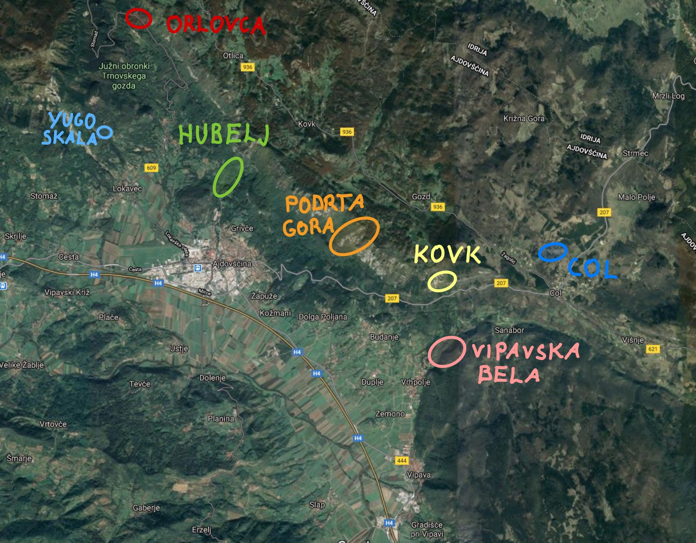

Intro
This is a collection of some boulders (or at least links to them) in upper Vipava valley. It is a work in progress so expect to be improved. The names and grades of the boulders are probably wrong. Contributions (informations, pictures, corrections…) are more than welcome, you can send a mail to marct15 (at) gmail.com or post at github page.
Guidelines
Since we would like to continue bouldering in the area, we ask you to follow some general guidelines:
- Respect the nature and rock, leave the place as it is, no littering.
- Park only in appropriate areas, don’t block local paths, when in doubt, just don’t.
- Don’t come in big groups, no wild camping.
Map

| No. | Name | # of lines currently listed | location |
|---|---|---|---|
| 1 | Orlovca + Yugo skala | 18 | gps Orlovca, gps Yugo skala |
| 2 | Podrta Gora | 35 | gps link |
| 3 | Kovk | 2 | gps link |
| 4 | Col | 9 | gps link |
| 5 | Vipavska Bela | 12 | gps link |